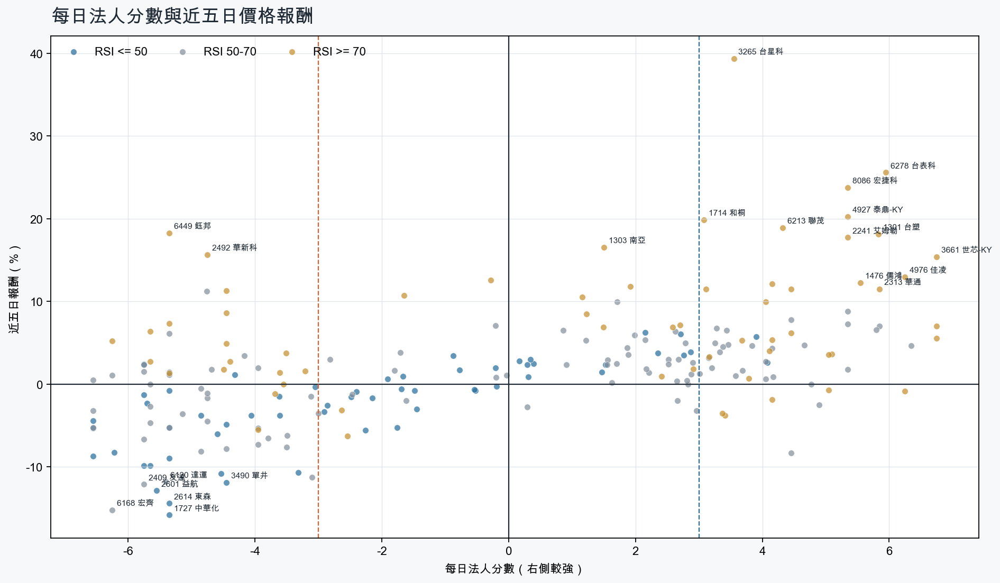
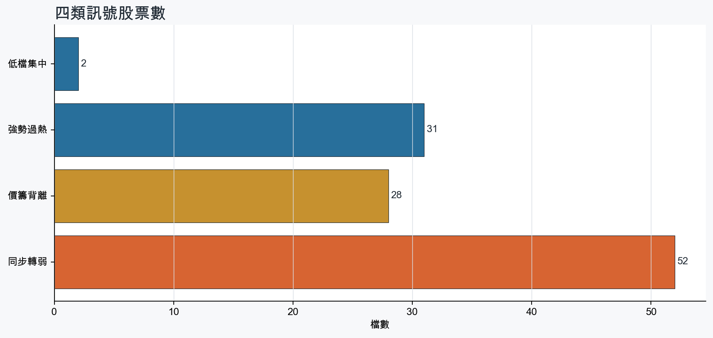
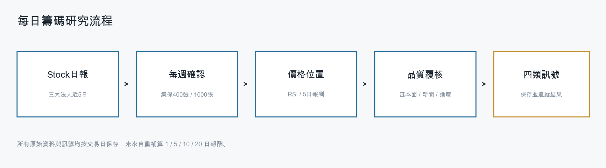
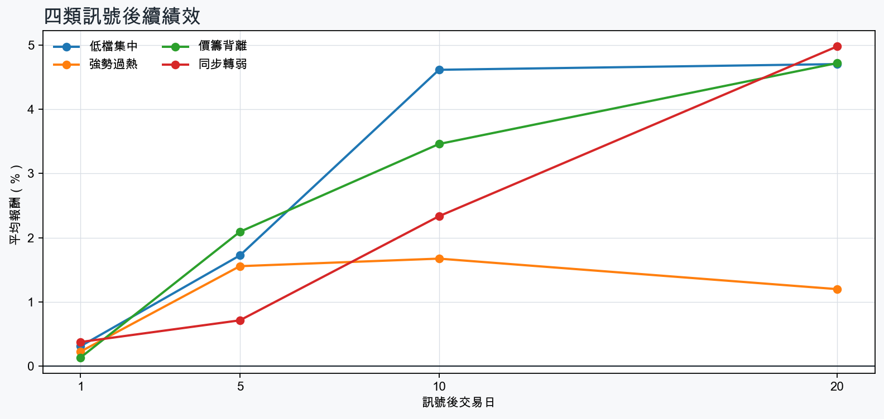

市場情緒偏空
近5日法人合計-1,369,266 張
篩選池上漲比例62.8%
籌碼好 / RSI低2 檔
籌碼差 / 價跌15 檔



EPS × PE VALUATION
法人常用的相對估值
顯示保守、基準與樂觀估值帶，不把單一數字包裝成精準目標價。
最新累計 EPS 依季數年化 × 同產業有效 P/E 的 Q25／中位數／Q75。排除本公司、非正 P/E，並以 1.5×IQR 排除離群值。估值帶是公開資料篩選值，不是法人目標價；未使用分析師預估 EPS。
MOOD × MONEY
情緒與籌碼雷達
熱度代表被討論程度；情緒分與法人方向分開計算。熱門不等於適合追價，樣本不足也不硬判多空。
| 股票 | 情緒 | 討論熱度 | 情緒 × 籌碼 | 情緒 × 基本面 |
|---|---|---|---|---|
| 2409 友達同步轉弱 | 偏空 -22.1信心 100 | 1004 篇 / 154 留言 / 3 則新聞 | 情籌雙弱法人分 -5.8 | 基本面與情緒分歧基本面分 -0.8 |
| 0050 元大台灣50價籌背離 | 偏多 +32.5信心 100 | 973 篇 / 129 留言 / 3 則新聞 | 熱門但法人撤退法人分 -4.5 | 基本面與情緒分歧基本面分 +0.0 |
| 2492 華新科價籌背離 | 情緒高漲 +72.7信心 87 | 782 篇 / 37 留言 / 3 則新聞 | 熱門但法人撤退法人分 -4.8 | 基本面與情緒共振基本面分 +3.0 |
| 1605 華新強勢過熱 | 情緒高漲 +72.7信心 87 | 782 篇 / 37 留言 / 3 則新聞 | 情籌共振法人分 +5.1 | 基本面與情緒共振基本面分 +2.4 |
| 4958 臻鼎-KY強勢過熱 | 情緒高漲 +37.8信心 73 | 781 篇 / 42 留言 / 3 則新聞 | 情籌共振法人分 +5.0 | 基本面與情緒共振基本面分 +3.0 |
| 3006 晶豪科同步轉弱 | 中性分歧 +0.0信心 62 | 741 篇 / 36 留言 / 2 則新聞 | 高熱分歧法人分 -6.5 | 基本面與情緒分歧基本面分 +3.6 |
| 2303 聯電同步轉弱 | 偏多 +34.2信心 59 | 671 篇 / 18 留言 / 3 則新聞 | 熱門但法人撤退法人分 -5.8 | 基本面與情緒共振基本面分 +3.6 |
| 6209 今國光強勢過熱 | 偏多 +25.3信心 60 | 621 篇 / 10 留言 / 3 則新聞 | 情籌共振法人分 +4.5 | 基本面與情緒共振基本面分 +3.6 |
| 3105 穩懋強勢過熱 | 情緒低迷 -47.7信心 48 | 571 篇 / 7 留言 / 2 則新聞 | 法人布局、市場悲觀法人分 +4.2 | 基本面佳、情緒悲觀基本面分 +3.6 |
| 4989 榮科價籌背離 | 中性分歧 +0.0信心 30 | 440 篇 / 0 留言 / 3 則新聞 | 情籌混合法人分 -4.5 | 基本面與情緒分歧基本面分 -0.2 |
| 3715 定穎投控價籌背離 | 偏多 +29.7信心 30 | 440 篇 / 0 留言 / 3 則新聞 | 熱門但法人撤退法人分 -5.3 | 基本面與情緒共振基本面分 +1.0 |
| 8210 勤誠價籌背離 | 偏多 +29.7信心 30 | 440 篇 / 0 留言 / 3 則新聞 | 熱門但法人撤退法人分 -5.8 | 基本面與情緒共振基本面分 +3.6 |
01
籌碼好 / RSI低
優先研究基本面；法人續買且價格止穩時，才適合分批觀察。
| 股票 / 確認狀態 | 每日法人分 | 浦男式近似 | 法人加速度 | RSI / 相對強弱 | 量價確認 | 融資融券 | 每週集保確認 | 基本面 | EPS × 同業 P/E 估值 | 情緒 / 情籌 | 近期消息 | 論壇討論 |
|---|---|---|---|---|---|---|---|---|---|---|---|---|
| 5904 寶雅*等待確認 · 90 分籌碼有訊號，但價格尚未確認 | +3.9法人 +5,454 張 / 4 天 | 接近 · 75站上月線；法人籌碼偏多；法人買盤加速；留意中期均線未翻多、明顯弱於大盤 | +4,842 張近3日 +4,482 / 連續 +1 日 | 48.7相對大盤 -5.3% | 量比 1.82確認分 +3.220日線低於60日線；近20日弱於大盤 | -0.1%融資 -3 張 / 融券 +0 張 | -0.63 pp1000張 -0.05 pp | 單月營收年增 +15.7%；累計營收年增 +14.1%；2026 Q2 累計 EPS 17.45仍需觀察下一期財報延續性來源：公開資訊觀測站 | 不適用年化 EPS 與交易所近四季 EPS 差異過大，可能有股本調整或一次性損益 | 中性分歧 +0.0熱度 37 / 信心 20情籌混合 | 【13:24 即時新聞】寶雅*(5904)股價走強，主力與法人籌碼分歧成盤中焦點CMoney投資網誌 · 10/12營收：寶雅*(5904)9月營收24億2232萬元，月增率-1.73%，年增率15.74%富聯網 · 10/12 | 近期沒有明確提及本股的論壇樣本 |
| 2912 統一超等待確認 · 76 分籌碼有訊號，但價格尚未確認 | +4.1法人 +3,462 張 / 5 天 | 接近 · 71站上月線；法人籌碼偏多；法人買盤加速；留意中期均線未翻多、明顯弱於大盤 | +4,184 張近3日 +3,208 / 連續 +5 日 | 45.2相對大盤 -5.2% | 量比 1.31確認分 +1.720日線低於60日線；近20日弱於大盤 | -%融資 - 張 / 融券 - 張 | -0.56 pp1000張 -0.42 pp | 2026 Q2 累計 EPS 6.032026 Q2 累計營益率 4.2%來源：公開資訊觀測站 | 基準 NT$ 170.7估值帶 98.89–212.0現價 216.0 · 高於估值帶 · 距基準 -21.0%2026 Q2 累計 EPS 6.03 → 年化 12.06貿易百貨同業 P/E 8.20／14.15／17.58 · n=10 · 信心中等以 Q2 累計 EPS 年化，不等同分析師全年預估來源：TWSE／TPEx 每日本益比 | 中性分歧 +0.0熱度 44 / 信心 30情籌混合 | 統一超營收／第3季951億元創單季新高IP商品熱賣業績大增五成| 個股情報| 股市UDN · 10/12統一超9月合併營收創同期新高 累計前三季2758.79億元 年增5.72％工商時報 · 10/12 | 近期沒有明確提及本股的論壇樣本 |
02
籌碼好 / RSI高
趨勢強但不追價，等待量縮、RSI降溫或回測支撐。
| 股票 / 確認狀態 | 每日法人分 | 浦男式近似 | 法人加速度 | RSI / 相對強弱 | 量價確認 | 融資融券 | 每週集保確認 | 基本面 | EPS × 同業 P/E 估值 | 情緒 / 情籌 | 近期消息 | 論壇討論 |
|---|---|---|---|---|---|---|---|---|---|---|---|---|
| 3624 光頡等待拉回 · 100 分等拉回，不追價 | +4.2法人 +11,459 張 / 3 天 | 命中 · 96站上月線；中期均線偏多；法人籌碼偏多；留意動能位置非最佳 | +13,377 張近3日 +11,344 / 連續 -1 日 | 73.4相對大盤 +56.4% | 量比 1.37確認分 +7.1價格、量能與籌碼未見明顯弱項 | -11.7%融資 -1,608 張 / 融券 +997 張 | +4.11 pp1000張 +8.67 pp | 單月營收年增 +67.4%；累計營收年增 +34.8%；2026 Q2 累計 EPS 1.86仍需觀察下一期財報延續性來源：公開資訊觀測站 | 基準 NT$ 102.8估值帶 67.37–176.2現價 166.5 · 估值帶內 · 距基準 -38.3%2026 Q2 累計 EPS 1.86 → 年化 3.72電子零組件同業 P/E 18.11／27.62／47.36 · n=148 · 信心中等以 Q2 累計 EPS 年化，不等同分析師全年預估來源：TWSE／TPEx 每日本益比 | 偏多 +29.7熱度 44 / 信心 30情籌共振 | 【量大強漲股整理】【 3265 台星科】【 2340 台亞】【6742澤米】【3624光頡】台股4.9萬點別亂追！10月主流大洗牌，【 台星科】漲停⊕後【Q4黑馬股】提前曝光！鉅亨網 · 10/123624 光頡 - 【光頡(3624)盤後解析】高檔爆量長黑，多方力道暫歇 今... - 股市爆料同學會CMoney · 10/12 | 近期沒有明確提及本股的論壇樣本 |
| 8086 宏捷科等待拉回 · 100 分等拉回，不追價 | +5.3法人 +5,766 張 / 4 天 | 接近 · 80站上月線；中期均線偏多；法人籌碼偏多；留意量能異常、RSI過熱 | +6,625 張近3日 +6,558 / 連續 +4 日 | 83.5相對大盤 +26.4% | 量比 4.70確認分 +5.3價格、量能與籌碼未見明顯弱項 | +2.9%融資 +402 張 / 融券 +541 張 | +5.03 pp1000張 +6.99 pp | 單月營收年增 +8.4%；累計營收年增 +32.1%；2026 Q2 累計 EPS 2.93仍需觀察下一期財報延續性來源：公開資訊觀測站 | 基準 NT$ 160.4估值帶 106.8–298.2現價 148.5 · 估值帶內 · 距基準 +8.0%2026 Q2 累計 EPS 2.93 → 年化 5.86半導體同業 P/E 18.23／27.37／50.88 · n=149 · 信心中等以 Q2 累計 EPS 年化，不等同分析師全年預估來源：TWSE／TPEx 每日本益比 | 中性分歧 +0.0熱度 44 / 信心 30情籌混合 | 《半導體》注意股：宏捷科 近5日漲33.91%富聯網 · 10/12砷化鎵題材升溫！宏捷科(8086)股價攻上漲停！CMoney投資網誌 · 10/12 | 近期沒有明確提及本股的論壇樣本 |
| 2484 希華等待拉回 · 100 分等拉回，不追價 | +4.2法人 +5,387 張 / 3 天 | 接近 · 90站上月線；中期均線偏多；法人籌碼偏多；留意RSI過熱 | +3,640 張近3日 +4,126 / 連續 -1 日 | 79.9相對大盤 +24.7% | 量比 1.12確認分 +6.5價格、量能與籌碼未見明顯弱項 | -%融資 - 張 / 融券 - 張 | +8.72 pp1000張 +7.17 pp | 單月營收年增 +23.1%；累計營收年增 +4.0%；2026 Q2 累計 EPS 0.86仍需觀察下一期財報延續性來源：公開資訊觀測站 | 基準 NT$ 47.51估值帶 31.15–81.46現價 91.10 · 高於估值帶 · 距基準 -47.9%2026 Q2 累計 EPS 0.86 → 年化 1.72電子零組件同業 P/E 18.11／27.62／47.36 · n=148 · 信心中等以 Q2 累計 EPS 年化，不等同分析師全年預估來源：TWSE／TPEx 每日本益比 | 中性分歧 +0.0熱度 44 / 信心 30情籌混合 | 2484 希華- 希華:MEMS在石英元件升級潮上優勢凸顯- 股市爆料同學會CMoney · 10/12《電零組》注意股：希華 近5日漲7.09%富聯網 · 10/12 | 近期沒有明確提及本股的論壇樣本 |
| 3016 嘉晶等待拉回 · 98 分等拉回，不追價 | +6.2法人 +3,755 張 / 5 天 | 接近 · 73站上月線；中期均線偏多；法人籌碼偏多；留意法人買盤未加速、量能異常 | -1,634 張近3日 +1,888 / 連續 +7 日 | 80.4相對大盤 +74.5% | 量比 0.20確認分 +1.1成交量不足；法人買盤減速 | -%融資 - 張 / 融券 - 張 | +6.97 pp1000張 +7.79 pp | 單月營收年增 +52.7%；累計營收年增 +36.9%；2026 Q2 累計 EPS 1.00仍需觀察下一期財報延續性來源：公開資訊觀測站 | 基準 NT$ 54.80估值帶 36.52–101.5現價 179.0 · 高於估值帶 · 距基準 -69.4%2026 Q2 累計 EPS 1.00 → 年化 2.00半導體同業 P/E 18.26／27.40／50.77 · n=150 · 信心中等以 Q2 累計 EPS 年化，不等同分析師全年預估來源：TWSE／TPEx 每日本益比 | 中性分歧 +0.0熱度 44 / 信心 30情籌混合 | 功率半導體全倒下！「護國神山」連2月營收站穩5千億元今領跌0.59% 德微重挫3.78%、健策、嘉晶挫逾2%FTNN 新聞網 · 10/123016 嘉晶- 韌性與遠見的時代啟示-台灣第一台本土曝光機問世！！！ - 股市爆料同學會CMoney · 10/11 | 近期沒有明確提及本股的論壇樣本 |
| 6209 今國光等待拉回 · 98 分等拉回，不追價 | +4.5法人 +6,001 張 / 3 天 | 命中 · 89站上月線；中期均線偏多；法人籌碼偏多；留意法人買盤未加速、動能位置非最佳 | -1,322 張近3日 +2,470 / 連續 -2 日 | 74.7相對大盤 +8.2% | 量比 2.34確認分 +2.5法人買盤減速 | -%融資 - 張 / 融券 - 張 | +6.16 pp1000張 +4.95 pp | 單月營收年增 +81.6%；累計營收年增 +71.4%；2026 Q2 累計 EPS 1.53仍需觀察下一期財報延續性來源：公開資訊觀測站 | 基準 NT$ 75.43估值帶 38.95–117.3現價 89.10 · 估值帶內 · 距基準 -15.3%2026 Q2 累計 EPS 1.53 → 年化 3.06光電同業 P/E 12.73／24.65／38.34 · n=68 · 信心中等以 Q2 累計 EPS 年化，不等同分析師全年預估來源：TWSE／TPEx 每日本益比 | 偏多 +25.3熱度 62 / 信心 60情籌共振 | 今國光紅外線鏡頭熱賣挹注 前9月營收41.64億元超越去年全年鉅亨網 · 10/106209 今國光 - 這檔主力很好操控 很喜歡對幹 - 股市爆料同學會CMoney · 10/12 | [情報] 6209 今國光 9月營收 M:20.12% Y:81.57%PTT Stock · 10-10 · 10 留言 |
| 6278 台表科等待拉回 · 100 分等拉回，不追價 | +6.0法人 +16,414 張 / 5 天 | 接近 · 90站上月線；中期均線偏多；法人籌碼偏多；留意RSI過熱 | +10,269 張近3日 +13,679 / 連續 +10 日 | 90.8相對大盤 +36.3% | 量比 2.18確認分 +6.5價格、量能與籌碼未見明顯弱項 | -%融資 - 張 / 融券 - 張 | +6.42 pp1000張 +4.90 pp | 單月營收年增 +15.9%；累計營收年增 +6.5%；2026 Q2 累計 EPS 4.932026 Q2 累計營益率 6.0%來源：公開資訊觀測站 | 基準 NT$ 243.1估值帶 125.5–381.3現價 272.5 · 估值帶內 · 距基準 -10.8%2026 Q2 累計 EPS 4.93 → 年化 9.86光電同業 P/E 12.73／24.65／38.67 · n=68 · 信心中等以 Q2 累計 EPS 年化，不等同分析師全年預估來源：TWSE／TPEx 每日本益比 | 中性分歧 +0.0熱度 44 / 信心 30情籌混合 | 【10:00 即時新聞】台表科(6278) 股價走強，買盤聚焦基本面與籌碼集中CMoney投資網誌 · 10/12焦點股：台表科營收爆發，股價亮燈！DDR5、AI伺服器與CPO SMT打件需求添動能富聯網 · 10/12 | 近期沒有明確提及本股的論壇樣本 |
| 3105 穩懋等待拉回 · 93 分等拉回，不追價 | +4.2法人 +12,973 張 / 3 天 | 命中 · 84站上月線；中期均線偏多；法人籌碼偏多；留意法人買盤未加速、量能尚未確認 | -11,700 張近3日 +4,757 / 連續 -1 日 | 73.5相對大盤 +20.5% | 量比 0.70確認分 +1.8法人買盤減速 | -0.4%融資 -198 張 / 融券 -92 張 | +9.15 pp1000張 +8.78 pp | 單月營收年增 +30.0%；累計營收年增 +32.6%；2026 Q2 累計 EPS 3.56仍需觀察下一期財報延續性來源：公開資訊觀測站 | 基準 NT$ 194.9估值帶 129.8–359.2現價 580.0 · 高於估值帶 · 距基準 -66.4%2026 Q2 累計 EPS 3.56 → 年化 7.12半導體同業 P/E 18.23／27.37／50.45 · n=149 · 信心中等以 Q2 累計 EPS 年化，不等同分析師全年預估來源：TWSE／TPEx 每日本益比 | 情緒低迷 -47.7熱度 57 / 信心 48法人布局、市場悲觀 | 鉅亨速報 - Factset 最新調查：穩懋(3105-TW)目標價調升至440元，幅度約11.39%鉅亨網 · 10/093105 穩懋 - 10檔目標價調升股多頭先鋒 台積、日月光等逢低布局 經濟日... - 股市爆料同學會CMoney · 10/12 | [標的] 3105 穩懋 櫃買跟三竹買賣超不同PTT Stock · 10-08 · 7 留言 |
| 1708 東鹼等待拉回 · 94 分等拉回，不追價 | +5.0法人 +2,608 張 / 4 天 | 命中 · 89站上月線；中期均線偏多；法人籌碼偏多；留意法人買盤未加速、動能位置非最佳 | -2,805 張近3日 +913 / 連續 -1 日 | 72.0相對大盤 +6.7% | 量比 1.14確認分 +2.2法人買盤減速 | -%融資 - 張 / 融券 - 張 | +2.12 pp1000張 +1.90 pp | 單月營收年增 +21.2%；累計營收年增 +16.6%；2026 Q2 累計 EPS 1.98仍需觀察下一期財報延續性來源：公開資訊觀測站 | 基準 NT$ 82.37估值帶 59.24–109.1現價 55.80 · 低於估值帶 · 距基準 +47.6%2026 Q2 累計 EPS 1.98 → 年化 3.96化學工業同業 P/E 14.96／20.80／27.55 · n=32 · 信心中等以 Q2 累計 EPS 年化，不等同分析師全年預估來源：TWSE／TPEx 每日本益比 | 樣本不足 +0.0熱度 0 / 信心 0情緒樣本不足 | 近期沒有通過股票語境篩選的新聞 | 近期沒有明確提及本股的論壇樣本 |
| 6257 矽格等待拉回 · 93 分等拉回，不追價 | +3.1法人 +4,793 張 / 1 天 | 接近 · 78站上月線；中期均線偏多；法人籌碼偏多；留意法人買盤未加速、買超延續不足 | -9,384 張近3日 -1,280 / 連續 -3 日 | 79.7相對大盤 +30.2% | 量比 1.14確認分 +2.5法人買盤減速 | -%融資 - 張 / 融券 - 張 | +8.69 pp1000張 +8.12 pp | 單月營收年增 +26.3%；累計營收年增 +21.2%；2026 Q2 累計 EPS 4.65仍需觀察下一期財報延續性來源：公開資訊觀測站 | 基準 NT$ 254.5估值帶 169.5–473.2現價 287.0 · 估值帶內 · 距基準 -11.3%2026 Q2 累計 EPS 4.65 → 年化 9.30半導體同業 P/E 18.23／27.37／50.88 · n=149 · 信心中等以 Q2 累計 EPS 年化，不等同分析師全年預估來源：TWSE／TPEx 每日本益比 | 偏多 +29.7熱度 44 / 信心 30情籌共振 | AI封測雙雄大爆發！台星科連兩日漲停、矽格營收創高 2奈米與ASIC點燃2027年成長引擎理財周刊 · 10/08今日漲停股｜AI晶片測試與光通訊領軍，矽格、永光、GIS-KY強勢亮燈1006｜豐雲學堂2026 年 10 月永豐金證券 · 10/07 | 近期沒有明確提及本股的論壇樣本 |
| 2402 毅嘉等待拉回 · 100 分等拉回，不追價 | +3.7法人 +2,481 張 / 3 天 | 接近 · 90站上月線；中期均線偏多；法人籌碼偏多；留意RSI過熱 | +1,179 張近3日 +2,099 / 連續 +1 日 | 78.0相對大盤 +9.4% | 量比 1.89確認分 +6.5價格、量能與籌碼未見明顯弱項 | -%融資 - 張 / 融券 - 張 | +1.81 pp1000張 +1.42 pp | 單月營收年增 +15.1%；累計營收年增 +16.9%；2026 Q2 累計 EPS 0.462026 Q2 累計營益率 4.4%來源：公開資訊觀測站 | 基準 NT$ 25.41估值帶 16.66–44.36現價 62.20 · 高於估值帶 · 距基準 -59.1%2026 Q2 累計 EPS 0.46 → 年化 0.92電子零組件同業 P/E 18.11／27.62／48.22 · n=148 · 信心中等以 Q2 累計 EPS 年化，不等同分析師全年預估來源：TWSE／TPEx 每日本益比 | 樣本不足 +0.0熱度 0 / 信心 0情緒樣本不足 | 近期沒有通過股票語境篩選的新聞 | 近期沒有明確提及本股的論壇樣本 |
| 2313 華通等待拉回 · 93 分等拉回，不追價 | +5.8法人 +34,710 張 / 4 天 | 命中 · 89站上月線；中期均線偏多；法人籌碼偏多；留意法人買盤未加速、動能位置非最佳 | -26,957 張近3日 +4,912 / 連續 +2 日 | 75.6相對大盤 +6.0% | 量比 2.03確認分 +2.0法人買盤減速 | -%融資 - 張 / 融券 - 張 | +1.32 pp1000張 +0.85 pp | 單月營收年增 +15.0%；累計營收年增 +13.0%；2026 Q2 累計 EPS 2.50仍需觀察下一期財報延續性來源：公開資訊觀測站 | 基準 NT$ 138.1估值帶 90.55–241.1現價 252.0 · 高於估值帶 · 距基準 -45.2%2026 Q2 累計 EPS 2.50 → 年化 5.00電子零組件同業 P/E 18.11／27.62／48.22 · n=148 · 信心中等以 Q2 累計 EPS 年化，不等同分析師全年預估來源：TWSE／TPEx 每日本益比 | 偏多 +29.7熱度 44 / 信心 30情籌共振 | 華通(2313)第三季營收創單季新高，衛星V3換代、光模組板放量帶動非消費性業務占比突破三成鉅亨網 · 10/12勤凱(4760)、華通(2313)外資籌碼集中怎麼看？｜大戶投策略選股｜外本比排名｜豐雲學堂2026 年 10 月永豐金證券 · 10/07 | 近期沒有明確提及本股的論壇樣本 |
| 1605 華新等待拉回 · 100 分等拉回，不追價 | +5.1法人 +35,992 張 / 4 天 | 命中 · 91站上月線；中期均線偏多；法人籌碼偏多；留意動能位置非最佳 | +19,220 張近3日 +30,902 / 連續 +1 日 | 71.7相對大盤 +0.2% | 量比 2.07確認分 +4.5價格、量能與籌碼未見明顯弱項 | -%融資 - 張 / 融券 - 張 | +0.88 pp1000張 +0.87 pp | 單月營收年增 +10.3%；累計營收年增 +3.3%；2026 Q2 累計 EPS 2.852026 Q2 累計營益率 1.4%來源：公開資訊觀測站 | 基準 NT$ 76.89估值帶 50.27–101.0現價 40.15 · 低於估值帶 · 距基準 +91.5%2026 Q2 累計 EPS 2.85 → 年化 5.70電器電纜同業 P/E 8.82／13.49／17.72 · n=13 · 信心中等以 Q2 累計 EPS 年化，不等同分析師全年預估來源：TWSE／TPEx 每日本益比 | 情緒高漲 +72.7熱度 78 / 信心 87情籌共振 | 1605 華新 - 法人估值上修eps到8元 華新麗華（1605）轉投資獲利大... - 股市爆料同學會CMoney · 10/12AI基建、電網升級需求點火！華新電線電纜訂單滿檔 外資砸8.86億元搶進逾2.2萬張Yahoo股市 · 10/10 | [情報] 2492 華新科 8月自結 1.55PTT Stock · 10-08 · 21 留言[情報] 2492 華新科 9月營收PTT Stock · 10-08 · 16 留言 |
| 4958 臻鼎-KY等待拉回 · 91 分等拉回，不追價 | +5.0法人 +13,464 張 / 4 天 | 接近 · 78站上月線；中期均線偏多；法人籌碼偏多；留意法人買盤未加速、量能尚未確認 | -20,895 張近3日 +5,616 / 連續 -1 日 | 79.0相對大盤 +11.2% | 量比 0.68確認分 +1.8法人買盤減速 | -%融資 - 張 / 融券 - 張 | +2.59 pp1000張 +2.20 pp | 單月營收年增 +36.1%；累計營收年增 +22.4%；2026 Q2 累計 EPS 3.552026 Q2 累計營益率 7.0%來源：公開資訊觀測站 | 基準 NT$ 196.1估值帶 128.6–336.3現價 581.0 · 高於估值帶 · 距基準 -66.2%2026 Q2 累計 EPS 3.55 → 年化 7.10電子零組件同業 P/E 18.11／27.62／47.36 · n=148 · 信心中等以 Q2 累計 EPS 年化，不等同分析師全年預估來源：TWSE／TPEx 每日本益比 | 情緒高漲 +37.8熱度 78 / 信心 73情籌共振 | 4958 臻鼎-KY - 9月營收歷史高的公司期待10月再創新高沈董砍八疊- 股市爆料同學會CMoney · 10/12三大法人買賣超– 外資買超(2492)華新科、(4958)臻鼎-KY，投信買超(2327)國巨*、(3661)世芯-KY，法人合計賣超212.57億元(1007)｜豐雲學堂2026 年 10 月永豐金證券 · 10/07 | [情報] 4958 臻鼎-KY 9月營收PTT Stock · 10-08 · 42 留言 |
| 3265 台星科等待拉回 · 100 分等拉回，不追價 | +3.5法人 +2,949 張 / 2 天 | 接近 · 75站上月線；中期均線偏多；法人籌碼偏多；留意買超延續不足、量能異常 | +982 張近3日 +2,105 / 連續 +1 日 | 89.2相對大盤 +51.9% | 量比 3.69確認分 +6.0價格、量能與籌碼未見明顯弱項 | -12.1%融資 -553 張 / 融券 +56 張 | +3.21 pp1000張 +0.65 pp | 單月營收年增 +11.5%；累計營收年增 +15.9%；2026 Q2 累計 EPS 3.85仍需觀察下一期財報延續性來源：公開資訊觀測站 | 基準 NT$ 210.8估值帶 140.4–391.8現價 262.0 · 估值帶內 · 距基準 -19.6%2026 Q2 累計 EPS 3.85 → 年化 7.70半導體同業 P/E 18.23／27.37／50.88 · n=149 · 信心中等以 Q2 累計 EPS 年化，不等同分析師全年預估來源：TWSE／TPEx 每日本益比 | 中性分歧 +0.0熱度 44 / 信心 30情籌混合 | 焦點股》台星科：ASIC需求旺 法說報佳音自由財經 · 10/12【量大強漲股整理】【 3265 台星科】【 2340 台亞】【6742澤米】【3624光頡】台股4.9萬點別亂追！10月主流大洗牌，【 台星科】漲停⊕後【Q4黑馬股】提前曝光！鉅亨網 · 10/12 | 近期沒有明確提及本股的論壇樣本 |
| 1477 聚陽等待拉回 · 83 分等拉回，不追價 | +6.8法人 +3,863 張 / 5 天 | 接近 · 63站上月線；法人籌碼偏多；買超具延續性；留意中期均線未翻多、法人買盤未加速 | -476 張近3日 +1,748 / 連續 +7 日 | 70.2相對大盤 -0.4% | 量比 0.90確認分 -0.420日線低於60日線；法人買盤減速 | -%融資 - 張 / 融券 - 張 | -0.01 pp1000張 -0.41 pp | 單月營收年增 +24.0%；累計營收年增 +0.2%；2026 Q2 累計 EPS 7.65仍需觀察下一期財報延續性來源：公開資訊觀測站 | 基準 NT$ 195.4估值帶 156.1–291.8現價 205.5 · 估值帶內 · 距基準 -4.9%2026 Q2 累計 EPS 7.65 → 年化 15.30紡織纖維同業 P/E 10.20／12.77／19.07 · n=34 · 信心中等以 Q2 累計 EPS 年化，不等同分析師全年預估來源：TWSE／TPEx 每日本益比 | 樣本不足 +0.0熱度 0 / 信心 0情緒樣本不足 | 近期沒有通過股票語境篩選的新聞 | 近期沒有明確提及本股的論壇樣本 |
03
籌碼差 / 股價上漲
可能是事件行情或軋空；沒有籌碼改善前避免追高。
| 股票 / 確認狀態 | 每日法人分 | 浦男式近似 | 法人加速度 | RSI / 相對強弱 | 量價確認 | 融資融券 | 每週集保確認 | 基本面 | EPS × 同業 P/E 估值 | 情緒 / 情籌 | 近期消息 | 論壇討論 |
|---|---|---|---|---|---|---|---|---|---|---|---|---|
| 6449 鈺邦風險警示 · 45 分背離警戒，避免追高 | -5.3法人 -3,625 張 / 1 天 | 接近 · 61站上月線；明顯強於大盤；量價健康；留意中期均線未翻多、法人籌碼偏弱 | -886 張近3日 -2,509 / 連續 -4 日 | 77.3相對大盤 +13.2% | 量比 1.49確認分 +2.520日線低於60日線；法人買盤減速 | -%融資 - 張 / 融券 - 張 | -3.28 pp1000張 -1.87 pp | 單月營收年增 +25.6%；累計營收年增 +24.0%；2026 Q2 累計 EPS 4.42仍需觀察下一期財報延續性來源：公開資訊觀測站 | 基準 NT$ 244.2估值帶 160.1–426.3現價 265.5 · 估值帶內 · 距基準 -8.0%2026 Q2 累計 EPS 4.42 → 年化 8.84電子零組件同業 P/E 18.11／27.62／48.22 · n=148 · 信心中等以 Q2 累計 EPS 年化，不等同分析師全年預估來源：TWSE／TPEx 每日本益比 | 偏空 -19.8熱度 37 / 信心 20情籌混合 | 盈餘：鈺邦(6449)股價遭警示，自結8月歸屬母公司淨利4720萬元，EPS 0.53元富聯網 · 10/12被動元件股太熱遭盯上！華新科6日狂飆35%、鈺邦漲近27% 「這檔」單日週轉率衝25.63%列入18檔注意股Yahoo股市 · 10/12 | 近期沒有明確提及本股的論壇樣本 |
| 3264 欣銓風險警示 · 64 分背離警戒，避免追高 | -4.8法人 -4,795 張 / 1 天 | 接近 · 82站上月線；中期均線偏多；法人買盤加速；留意法人籌碼偏弱、買超延續不足 | +16,303 張近3日 +4,915 / 連續 +1 日 | 61.6相對大盤 +12.5% | 量比 2.06確認分 +6.5價格、量能與籌碼未見明顯弱項 | +4.1%融資 +522 張 / 融券 -12 張 | -7.40 pp1000張 -8.08 pp | 單月營收年增 +46.9%；累計營收年增 +35.4%；2026 Q2 累計 EPS 4.39仍需觀察下一期財報延續性來源：公開資訊觀測站 | 基準 NT$ 240.3估值帶 160.1–446.7現價 272.5 · 估值帶內 · 距基準 -11.8%2026 Q2 累計 EPS 4.39 → 年化 8.78半導體同業 P/E 18.23／27.37／50.88 · n=149 · 信心中等以 Q2 累計 EPS 年化，不等同分析師全年預估來源：TWSE／TPEx 每日本益比 | 中性分歧 +0.0熱度 37 / 信心 20情籌混合 | 【11:43 即時新聞】欣銓(3264)股價走強，市場聚焦AI測試產能擴張CMoney投資網誌 · 10/12封測逆勢勁揚！「這檔」連拔3根寫新高挾旺矽、久元漲停 穎崴衝7%、欣銓攻6.45%FTNN 新聞網 · 10/12 | 近期沒有明確提及本股的論壇樣本 |
| 2492 華新科風險警示 · 48 分背離警戒，避免追高 | -4.8法人 -4,868 張 / 2 天 | 未命中 · 55站上月線；中期均線偏多；明顯強於大盤；留意法人籌碼偏弱、法人買盤未加速 | -2,356 張近3日 +1,453 / 連續 -2 日 | 84.2相對大盤 +26.3% | 量比 0.62確認分 +1.1成交量不足；法人買盤減速 | -%融資 - 張 / 融券 - 張 | +1.83 pp1000張 +1.70 pp | 單月營收年增 +53.9%；累計營收年增 +25.8%；2026 Q2 累計 EPS 4.93仍需觀察下一期財報延續性來源：公開資訊觀測站 | 基準 NT$ 272.3估值帶 178.6–475.4現價 418.0 · 估值帶內 · 距基準 -34.9%2026 Q2 累計 EPS 4.93 → 年化 9.86電子零組件同業 P/E 18.11／27.62／48.22 · n=148 · 信心中等以 Q2 累計 EPS 年化，不等同分析師全年預估來源：TWSE／TPEx 每日本益比 | 情緒高漲 +72.7熱度 78 / 信心 87熱門但法人撤退 | 華新科產品需求持續向上，9月營收創同期高Yahoo股市 · 10/12台股3檔「抓去關」新名單 被動元件華新科上榜ETtoday財經雲 · 10/12 | [情報] 2492 華新科 8月自結 1.55PTT Stock · 10-08 · 21 留言[情報] 2492 華新科 9月營收PTT Stock · 10-08 · 16 留言 |
| 2472 立隆電風險警示 · 44 分背離警戒，避免追高 | -5.7法人 -3,543 張 / 1 天 | 未命中 · 55站上月線；明顯強於大盤；量價健康；留意中期均線未翻多、法人籌碼偏弱 | -1,955 張近3日 -3,282 / 連續 -3 日 | 80.2相對大盤 +8.8% | 量比 1.31確認分 +2.520日線低於60日線；法人買盤減速 | -%融資 - 張 / 融券 - 張 | -2.21 pp1000張 -3.29 pp | 單月營收年增 +39.5%；累計營收年增 +26.1%；2026 Q2 累計 EPS 3.98仍需觀察下一期財報延續性來源：公開資訊觀測站 | 基準 NT$ 225.5估值帶 144.2–383.8現價 243.5 · 估值帶內 · 距基準 -7.4%2026 Q2 累計 EPS 3.98 → 年化 7.96電子零組件同業 P/E 18.11／28.33／48.22 · n=148 · 信心中等以 Q2 累計 EPS 年化，不等同分析師全年預估來源：TWSE／TPEx 每日本益比 | 樣本不足 +0.0熱度 0 / 信心 0情緒樣本不足 | 近期沒有通過股票語境篩選的新聞 | 近期沒有明確提及本股的論壇樣本 |
| 4989 榮科風險警示 · 49 分背離警戒，避免追高 | -4.5法人 -3,720 張 / 2 天 | 未命中 · 46站上月線；明顯強於大盤；量價健康；留意中期均線未翻多、法人籌碼偏弱 | -3,421 張近3日 -3,712 / 連續 -2 日 | 73.5相對大盤 +11.1% | 量比 1.43確認分 +2.520日線低於60日線；法人買盤減速 | -%融資 - 張 / 融券 - 張 | +2.81 pp1000張 +2.87 pp | 單月營收年增 +56.6%；累計營收年增 +70.9%2026 Q2 累計 EPS -0.67；2026 Q2 累計營益率 -5.1%來源：公開資訊觀測站 | 不適用年化 EPS 非正數，不適合使用本益比估值 | 中性分歧 +0.0熱度 44 / 信心 30情籌混合 | 《電零組》注意股：榮科 近5日漲19.80%富聯網 · 10/124989 榮科- 榮科這是? - 股市爆料同學會CMoney · 10/07 | 近期沒有明確提及本股的論壇樣本 |
| 3715 定穎投控風險警示 · 52 分背離警戒，避免追高 | -5.3法人 -2,864 張 / 1 天 | 未命中 · 57站上月線；中期均線偏多；法人買盤加速；留意法人籌碼偏弱、買超延續不足 | +1,533 張近3日 -702 / 連續 -2 日 | 79.7相對大盤 -1.5% | 量比 1.08確認分 +4.1價格、量能與籌碼未見明顯弱項 | -%融資 - 張 / 融券 - 張 | +0.49 pp1000張 -0.46 pp | 單月營收年增 +84.7%；累計營收年增 +51.3%2026 Q2 累計 EPS -1.55；2026 Q2 累計營益率 1.6%來源：公開資訊觀測站 | 不適用年化 EPS 非正數，不適合使用本益比估值 | 偏多 +29.7熱度 44 / 信心 30熱門但法人撤退 | 定穎投控今年虧轉盈股價強勢表態理財周刊 · 10/073715 定穎投控 - 定潁投控：就250元在賣就好“”以明年獲利的EPS／250元... - 股市爆料同學會CMoney · 10/11 | 近期沒有明確提及本股的論壇樣本 |
| 5452 佶優風險警示 · 60 分背離警戒，避免追高 | -5.3法人 -1,996 張 / 1 天 | 接近 · 73站上月線；中期均線偏多；法人買盤加速；留意法人籌碼偏弱、買超延續不足 | +555 張近3日 -653 / 連續 +1 日 | 65.8相對大盤 +7.2% | 量比 0.79確認分 +5.5價格、量能與籌碼未見明顯弱項 | +0.6%融資 +26 張 / 融券 +1 張 | -0.09 pp1000張 +0.16 pp | 單月營收年增 +10.4%；2026 Q2 累計 EPS 0.39累計營收年增 -0.7%；2026 Q2 累計營益率 5.1%來源：公開資訊觀測站 | 基準 NT$ 17.69估值帶 12.16–28.50現價 29.65 · 高於估值帶 · 距基準 -40.3%2026 Q2 累計 EPS 0.39 → 年化 0.78其他電子同業 P/E 15.59／22.68／36.54 · n=67 · 信心中等以 Q2 累計 EPS 年化，不等同分析師全年預估來源：TWSE／TPEx 每日本益比 | 樣本不足 +0.0熱度 0 / 信心 0情緒樣本不足 | 近期沒有通過股票語境篩選的新聞 | 近期沒有明確提及本股的論壇樣本 |
| 8210 勤誠風險警示 · 19 分背離警戒，避免追高 | -5.8法人 -3,194 張 / 0 天 | 未命中 · 43法人買盤加速；量價健康；基本面有支撐；留意未站月線、中期均線未翻多 | +114 張近3日 -1,600 / 連續 -10 日 | 41.8相對大盤 -10.5% | 量比 1.13確認分 -1.9收盤跌破20日線；20日線低於60日線；近20日弱於大盤 | -%融資 - 張 / 融券 - 張 | -5.57 pp1000張 -3.00 pp | 單月營收年增 +13.8%；累計營收年增 +46.3%；2026 Q2 累計 EPS 21.83仍需觀察下一期財報延續性來源：公開資訊觀測站 | 基準 NT$ 738.3估值帶 535.7–1,012現價 861.0 · 估值帶內 · 距基準 -14.2%2026 Q2 累計 EPS 21.83 → 年化 43.66電腦及週邊同業 P/E 12.27／16.91／23.17 · n=77 · 信心中等以 Q2 累計 EPS 年化，不等同分析師全年預估來源：TWSE／TPEx 每日本益比 | 偏多 +29.7熱度 44 / 信心 30熱門但法人撤退 | 勤誠前3季營收233億元超越去年全年 馬來西亞新廠本季進入量產爬坡階段鉅亨網 · 10/12個股：勤誠前三季營收超越去年，唱旺AI基建需求，全球製造佈局加速落地富聯網 · 10/12 | 近期沒有明確提及本股的論壇樣本 |
| 2367 燿華風險警示 · 55 分背離警戒，避免追高 | -6.2法人 -11,095 張 / 0 天 | 接近 · 63站上月線；中期均線偏多；法人買盤加速；留意法人籌碼偏弱、買超延續不足 | +2,491 張近3日 -3,264 / 連續 -5 日 | 72.5相對大盤 +8.1% | 量比 1.50確認分 +6.5價格、量能與籌碼未見明顯弱項 | -%融資 - 張 / 融券 - 張 | +0.02 pp1000張 -0.09 pp | 單月營收年增 +3.5%；累計營收年增 +0.3%2026 Q2 累計 EPS -0.64；2026 Q2 累計營益率 -6.5%來源：公開資訊觀測站 | 不適用年化 EPS 非正數，不適合使用本益比估值 | 中性分歧 +0.0熱度 44 / 信心 30情籌混合 | 2367 燿華- 【金包銀之耀華：PCB悍將量增強彈，多方大軍強勢突圍！】 - 股市爆料同學會CMoney · 10/12營收：燿華(2367)9月營收14億7966萬元，月增率1.35%，年增率3.52%富聯網 · 10/12 | 近期沒有明確提及本股的論壇樣本 |
| 3031 佰鴻風險警示 · 61 分背離警戒，避免追高 | -4.5法人 -2,035 張 / 2 天 | 接近 · 72站上月線；中期均線偏多；法人買盤加速；留意法人籌碼偏弱、買超延續不足 | +85 張近3日 -366 / 連續 -1 日 | 80.4相對大盤 +36.8% | 量比 1.66確認分 +5.1價格、量能與籌碼未見明顯弱項 | -%融資 - 張 / 融券 - 張 | -1.89 pp1000張 -0.57 pp | 單月營收年增 +6.0%；累計營收年增 +21.5%；2026 Q2 累計 EPS 0.57仍需觀察下一期財報延續性來源：公開資訊觀測站 | 基準 NT$ 28.10估值帶 14.51–44.08現價 34.40 · 估值帶內 · 距基準 -18.3%2026 Q2 累計 EPS 0.57 → 年化 1.14光電同業 P/E 12.73／24.65／38.67 · n=68 · 信心中等以 Q2 累計 EPS 年化，不等同分析師全年預估來源：TWSE／TPEx 每日本益比 | 中性分歧 +0.0熱度 37 / 信心 20情籌混合 | 【13:16 即時新聞】佰鴻(3031)盤中走強，LED封裝與光通訊布局受關注CMoney投資網誌 · 10/12【佰鴻法說會重點內容備忘錄】未來展望趨勢 20260922富果直送 · 09/22 | 近期沒有明確提及本股的論壇樣本 |
| 3236 千如風險警示 · 78 分背離警戒，避免追高 | -4.5法人 -2,312 張 / 2 天 | 接近 · 72站上月線；中期均線偏多；法人買盤加速；留意法人籌碼偏弱、買超延續不足 | +986 張近3日 -721 / 連續 -1 日 | 88.2相對大盤 +26.7% | 量比 1.76確認分 +6.5價格、量能與籌碼未見明顯弱項 | +2.3%融資 +92 張 / 融券 +55 張 | +3.57 pp1000張 +3.02 pp | 單月營收年增 +27.4%；累計營收年增 +21.9%；2026 Q2 累計 EPS 0.202026 Q2 累計營益率 4.5%來源：公開資訊觀測站 | 基準 NT$ 11.05估值帶 7.24–18.94現價 58.00 · 高於估值帶 · 距基準 -81.0%2026 Q2 累計 EPS 0.20 → 年化 0.40電子零組件同業 P/E 18.11／27.62／47.36 · n=148 · 信心中等以 Q2 累計 EPS 年化，不等同分析師全年預估來源：TWSE／TPEx 每日本益比 | 中性分歧 +0.0熱度 44 / 信心 30情籌混合 | 《電零組》注意股：千如 近5日漲21.32%富聯網 · 10/12【10:40 即時新聞】千如(3236)股價走強，盤中買盤延續成焦點CMoney投資網誌 · 10/08 | 近期沒有明確提及本股的論壇樣本 |
| 0050 元大台灣50風險警示 · 26 分背離警戒，避免追高 | -4.5法人 -157,719 張 / 1 天 | 接近 · 58站上月線；中期均線偏多；相對大盤偏強；留意法人籌碼偏弱、法人買盤未加速 | -143,550 張近3日 -165,180 / 連續 -4 日 | 76.7相對大盤 +0.2% | 量比 1.44確認分 +0.6法人買盤減速 | -%融資 - 張 / 融券 - 張 | -193.51 pp1000張 -132.03 pp | 尚無明確成長訊號仍需觀察下一期財報延續性來源：公開資訊觀測站 | 不適用最新財報缺少可年化 EPS | 偏多 +32.5熱度 97 / 信心 100熱門但法人撤退 | 【零股排行榜】盤中零股成交量TOP 20｜0050 元大台灣50、009816 凱基台灣TOP50、2317 鴻海、2303 聯電、2330 台積電 (1012)｜豐雲學堂2026 年 10 月永豐金證券 · 10/12【零股排行榜】盤中零股成交量TOP 20｜0050 元大台灣50、00919 群益台灣精選高息、009816 凱基台灣TOP50、0056 元大高股息、00878 國泰永續高股息(1008)｜豐雲學堂2026 年 10 月永豐金證券 · 10/08 | Re: [標的] 0050 信貸Allin多PTT Stock · 10-08 · 58 留言Re: [標的] 0050 信貸Allin多PTT Stock · 10-08 · 40 留言 |
| 8112 至上風險警示 · 41 分背離警戒，避免追高 | -4.7法人 -5,420 張 / 1 天 | 未命中 · 57站上月線；法人買盤加速；量價健康；留意中期均線未翻多、法人籌碼偏弱 | +1,713 張近3日 -2,679 / 連續 +1 日 | 70.0相對大盤 -5.5% | 量比 1.14確認分 +1.620日線低於60日線；近20日弱於大盤 | -%融資 - 張 / 融券 - 張 | -3.46 pp1000張 -3.46 pp | 單月營收年增 +233.5%；累計營收年增 +184.5%；2026 Q2 累計 EPS 9.452026 Q2 累計營益率 3.2%來源：公開資訊觀測站 | 基準 NT$ 236.2估值帶 195.4–437.7現價 85.60 · 低於估值帶 · 距基準 +176.0%2026 Q2 累計 EPS 9.45 → 年化 18.90電子通路同業 P/E 10.34／12.50／23.16 · n=31 · 信心中等以 Q2 累計 EPS 年化，不等同分析師全年預估來源：TWSE／TPEx 每日本益比 | 樣本不足 +0.0熱度 26 / 信心 10情緒樣本不足 | 期貨：至上週四(8日)止三大法人各種期貨未平倉口數一覽表富聯網 · 10/12 | 近期沒有明確提及本股的論壇樣本 |
| 3013 晟銘電風險警示 · 42 分背離警戒，避免追高 | -5.7法人 -2,535 張 / 1 天 | 接近 · 65站上月線；中期均線偏多；明顯強於大盤；留意法人籌碼偏弱、法人買盤未加速 | -366 張近3日 -2,235 / 連續 -3 日 | 79.3相對大盤 +4.9% | 量比 1.31確認分 +1.7法人買盤減速 | -%融資 - 張 / 融券 - 張 | -1.00 pp1000張 -0.43 pp | 單月營收年增 +7.6%；累計營收年增 +20.2%；2026 Q2 累計 EPS 2.78仍需觀察下一期財報延續性來源：公開資訊觀測站 | 基準 NT$ 94.02估值帶 68.22–128.8現價 95.20 · 估值帶內 · 距基準 -1.2%2026 Q2 累計 EPS 2.78 → 年化 5.56電腦及週邊同業 P/E 12.27／16.91／23.17 · n=77 · 信心中等以 Q2 累計 EPS 年化，不等同分析師全年預估來源：TWSE／TPEx 每日本益比 | 樣本不足 +9.9熱度 26 / 信心 10情緒樣本不足 | 3013 晟銘電 - 今天業績成長股都在飆你怎麼突然安靜了😅 - 股市爆料同學會CMoney · 10/11 | 近期沒有明確提及本股的論壇樣本 |
| 3324 雙鴻風險警示 · 61 分背離警戒，避免追高 | -5.8法人 -1,687 張 / 0 天 | 接近 · 77站上月線；中期均線偏多；法人買盤加速；留意法人籌碼偏弱、買超延續不足 | +434 張近3日 -1,008 / 連續 -9 日 | 62.2相對大盤 +6.7% | 量比 0.70確認分 +5.4價格、量能與籌碼未見明顯弱項 | -0.8%融資 -64 張 / 融券 -18 張 | +0.63 pp1000張 -2.93 pp | 單月營收年增 +23.2%；累計營收年增 +72.4%；2026 Q2 累計 EPS 23.01仍需觀察下一期財報延續性來源：公開資訊觀測站 | 基準 NT$ 1,044估值帶 717.5–1,701現價 1,540 · 估值帶內 · 距基準 -32.2%2026 Q2 累計 EPS 23.01 → 年化 46.02其他電子同業 P/E 15.59／22.68／36.97 · n=67 · 信心中等以 Q2 累計 EPS 年化，不等同分析師全年預估來源：TWSE／TPEx 每日本益比 | 偏多 +29.7熱度 44 / 信心 30熱門但法人撤退 | Q4營收再飆兩位數！奇鋐、雙鴻、健策、富世達...散熱4雄誰先登上萬金股？大咖法人給答案目標價、EPS完整看- 上市櫃旺得富理財網 · 10/123324 雙鴻- 【金包銀之雙鴻：散熱大廠量縮強彈，多方大軍蓄勢再起！】 - 股市爆料同學會CMoney · 10/12 | 近期沒有明確提及本股的論壇樣本 |
04
籌碼差 / 股價下跌
籌碼與價格同弱，原則上迴避，等待法人與大戶同時回補。
| 股票 / 確認狀態 | 每日法人分 | 浦男式近似 | 法人加速度 | RSI / 相對強弱 | 量價確認 | 融資融券 | 每週集保確認 | 基本面 | EPS × 同業 P/E 估值 | 情緒 / 情籌 | 近期消息 | 論壇討論 |
|---|---|---|---|---|---|---|---|---|---|---|---|---|
| 1727 中華化風險警示 · 48 分迴避，等待籌碼翻正 | -5.3法人 -8,814 張 / 1 天 | 接近 · 62中期均線偏多；法人買盤加速；明顯強於大盤；留意未站月線、法人籌碼偏弱 | +1,729 張近3日 -1,116 / 連續 +1 日 | 48.9相對大盤 +9.1% | 量比 0.32確認分 +3.1收盤跌破20日線；成交量不足 | -%融資 - 張 / 融券 - 張 | -2.86 pp1000張 -0.96 pp | 單月營收年增 +40.4%；累計營收年增 +28.1%；2026 Q2 累計 EPS 0.66仍需觀察下一期財報延續性來源：公開資訊觀測站 | 基準 NT$ 27.07估值帶 18.94–35.67現價 103.5 · 高於估值帶 · 距基準 -73.8%2026 Q2 累計 EPS 0.66 → 年化 1.32化學工業同業 P/E 14.35／20.51／27.02 · n=33 · 信心中等以 Q2 累計 EPS 年化，不等同分析師全年預估來源：TWSE／TPEx 每日本益比 | 偏多 +19.8熱度 37 / 信心 20情籌混合 | 《上市公司除權除息1-1》中華化10月13日除權，開盤參考價為103.50元富聯網 · 10/12《上市公司現金增資一覽表》中華化、永光富聯網 · 10/12 | 近期沒有明確提及本股的論壇樣本 |
| 2614 東森風險警示 · 4 分迴避，等待籌碼翻正 | -5.3法人 -5,592 張 / 1 天 | 未命中 · 12留意未站月線、中期均線未翻多 | -156 張近3日 -2,702 / 連續 -4 日 | 30.7相對大盤 -13.8% | 量比 0.70確認分 -4.3收盤跌破20日線；20日線低於60日線；近20日弱於大盤；法人買盤減速；流動性偏低 | -%融資 - 張 / 融券 - 張 | -2.02 pp1000張 -1.78 pp | 2026 Q2 累計 EPS 0.83單月營收年增 -2.7%；累計營收年增 -3.6%；2026 Q2 累計營益率 6.5%來源：公開資訊觀測站 | 基準 NT$ 23.62估值帶 17.25–39.77現價 15.25 · 低於估值帶 · 距基準 +54.9%2026 Q2 累計 EPS 0.83 → 年化 1.66其他同業 P/E 10.39／14.23／23.96 · n=70 · 信心中等以 Q2 累計 EPS 年化，不等同分析師全年預估來源：TWSE／TPEx 每日本益比 | 樣本不足 +0.0熱度 26 / 信心 10情緒樣本不足 | 馬斯克「一句話」台積電股價震盪！原因曝光東森新聞 · 10/10 | 近期沒有明確提及本股的論壇樣本 |
| 3490 單井風險警示 · 26 分迴避，等待籌碼翻正 | -4.5法人 -2,349 張 / 2 天 | 未命中 · 39中期均線偏多；法人買盤加速；動能強但未過熱；留意未站月線、法人籌碼偏弱 | +5,233 張近3日 +263 / 連續 +1 日 | 48.0相對大盤 -3.5% | 量比 0.33確認分 +0.3收盤跌破20日線；近20日弱於大盤；成交量不足 | -0.0%融資 -1 張 / 融券 +0 張 | -8.68 pp1000張 -4.89 pp | 單月營收年增 +1.6%；累計營收年增 +5.7%；2026 Q2 累計 EPS 6.152026 Q2 累計營益率 -25.9%來源：公開資訊觀測站 | 基準 NT$ 318.3估值帶 161.0–475.6現價 44.65 · 低於估值帶 · 距基準 +612.9%2026 Q2 累計 EPS 6.15 → 年化 12.30光電同業 P/E 13.09／25.88／38.67 · n=68 · 信心中等以 Q2 累計 EPS 年化，不等同分析師全年預估來源：TWSE／TPEx 每日本益比 | 樣本不足 +0.0熱度 0 / 信心 0情緒樣本不足 | 近期沒有通過股票語境篩選的新聞 | 近期沒有明確提及本股的論壇樣本 |
| 2601 益航風險警示 · 19 分迴避，等待籌碼翻正 | -5.5法人 -5,702 張 / 0 天 | 未命中 · 17法人買盤加速；量價健康；留意未站月線、中期均線未翻多 | +1,331 張近3日 -2,185 / 連續 -5 日 | 5.3相對大盤 -29.3% | 量比 0.96確認分 -1.0收盤跌破20日線；20日線低於60日線；近20日弱於大盤；流動性偏低 | -%融資 - 張 / 融券 - 張 | -2.28 pp1000張 -2.45 pp | 2026 Q2 累計營益率 16.9%2026 Q2 累計 EPS -0.20來源：公開資訊觀測站 | 不適用年化 EPS 非正數，不適合使用本益比估值 | 樣本不足 +0.0熱度 0 / 信心 0情緒樣本不足 | 近期沒有通過股票語境篩選的新聞 | 近期沒有明確提及本股的論壇樣本 |
| 3006 晶豪科風險警示 · 0 分迴避，等待籌碼翻正 | -6.5法人 -9,823 張 / 0 天 | 未命中 · 36中期均線偏多；基本面有支撐；流動性足夠；留意未站月線、法人籌碼偏弱 | -3,241 張近3日 -5,282 / 連續 -5 日 | 38.2相對大盤 -19.5% | 量比 0.57確認分 -4.8收盤跌破20日線；近20日弱於大盤；成交量不足；法人買盤減速 | -%融資 - 張 / 融券 - 張 | -6.85 pp1000張 -6.88 pp | 單月營收年增 +470.2%；累計營收年增 +343.9%；2026 Q2 累計 EPS 27.58仍需觀察下一期財報延續性來源：公開資訊觀測站 | 基準 NT$ 1,513估值帶 1,012–2,807現價 260.5 · 低於估值帶 · 距基準 +480.8%2026 Q2 累計 EPS 27.58 → 年化 55.16半導體同業 P/E 18.34／27.43／50.88 · n=149 · 信心中等以 Q2 累計 EPS 年化，不等同分析師全年預估來源：TWSE／TPEx 每日本益比 | 中性分歧 +0.0熱度 74 / 信心 62高熱分歧 | 3006 晶豪科- 讀了南亞科法說全文- 股市爆料同學會CMoney · 10/123006 晶豪科- 改作空有點舒服- 股市爆料同學會CMoney · 10/12 | [標的] 3006晶豪科PTT Stock · 10-10 · 36 留言 |
| 2409 友達風險警示 · 48 分迴避，等待籌碼翻正 | -5.8法人 -505,156 張 / 0 天 | 未命中 · 57站上月線；中期均線偏多；法人買盤加速；留意法人籌碼偏弱、買超延續不足 | +59,173 張近3日 -177,347 / 連續 -5 日 | 62.8相對大盤 +12.1% | 量比 0.56確認分 +5.2成交量不足 | -%融資 - 張 / 融券 - 張 | -1.05 pp1000張 -0.98 pp | 2026 Q2 累計 EPS 0.03單月營收年增 -4.3%；累計營收年增 -2.1%；2026 Q2 累計營益率 -0.3%來源：公開資訊觀測站 | 基準 NT$ 1.55估值帶 0.77–2.31現價 35.55 · 高於估值帶 · 距基準 -95.6%2026 Q2 累計 EPS 0.03 → 年化 0.06光電同業 P/E 12.83／25.86／38.57 · n=69 · 信心較低以 Q2 累計 EPS 年化，不等同分析師全年預估；年化 EPS 為交易所近四季 EPS 的 0.25 倍，需保守解讀來源：TWSE／TPEx 每日本益比 | 偏空 -22.1熱度 100 / 信心 100情籌雙弱 | 友達真的被大立光「開法會」？外資續賣2.6萬張 為今日賣超第二名UDN · 10/12大立光開法說...友達、上詮變法會？高盛給看法目標價超炸裂：第3季「5原因」弱預期- 上市櫃旺得富理財網 · 10/12 | [情報] 2409 友達 115年9月營收PTT Stock · 10-08 · 74 留言[新聞] 友達「甜甜價」曝光！拉回就買必勝？散PTT Stock · 10-08 · 38 留言 |
| 5314 世紀*風險警示 · 28 分迴避，等待籌碼翻正 | -3.3法人 -7,435 張 / 1 天 | 未命中 · 43中期均線偏多；法人買盤加速；基本面偏正向；留意未站月線、法人籌碼偏弱 | +3,403 張近3日 -3,643 / 連續 +1 日 | 46.7相對大盤 -41.7% | 量比 0.52確認分 -0.8收盤跌破20日線；近20日弱於大盤；成交量不足 | +0.8%融資 +138 張 / 融券 -100 張 | -7.64 pp1000張 -7.38 pp | 2026 Q2 累計 EPS 0.66；2026 Q2 累計營益率 12.5%仍需觀察下一期財報延續性來源：公開資訊觀測站 | 基準 NT$ 18.78估值帶 13.71–31.63現價 26.70 · 估值帶內 · 距基準 -29.6%2026 Q2 累計 EPS 0.66 → 年化 1.32其他同業 P/E 10.39／14.23／23.96 · n=70 · 信心較低以 Q2 累計 EPS 年化，不等同分析師全年預估；年化 EPS 為交易所近四季 EPS 的 0.29 倍，需保守解讀來源：TWSE／TPEx 每日本益比 | 樣本不足 +0.0熱度 26 / 信心 10情緒樣本不足 | 5314 世紀* - 快訊： 世紀*9月營收公布了 472,835 （單位：新台幣... - 股市爆料同學會CMoney · 10/12 | 近期沒有明確提及本股的論壇樣本 |
| 3141 晶宏風險警示 · 18 分迴避，等待籌碼翻正 | -5.3法人 -1,904 張 / 1 天 | 未命中 · 37中期均線偏多；法人買盤加速；基本面有支撐；留意未站月線、法人籌碼偏弱 | +1,496 張近3日 -45 / 連續 -2 日 | 22.9相對大盤 -20.0% | 量比 0.56確認分 -2.4收盤跌破20日線；近20日弱於大盤；成交量不足 | -0.2%融資 -12 張 / 融券 -6 張 | -4.09 pp1000張 -6.30 pp | 單月營收年增 +33.4%；累計營收年增 +25.1%；2026 Q2 累計 EPS 2.19仍需觀察下一期財報延續性來源：公開資訊觀測站 | 基準 NT$ 120.1估值帶 79.85–222.8現價 79.30 · 低於估值帶 · 距基準 +51.5%2026 Q2 累計 EPS 2.19 → 年化 4.38半導體同業 P/E 18.23／27.43／50.88 · n=149 · 信心中等以 Q2 累計 EPS 年化，不等同分析師全年預估來源：TWSE／TPEx 每日本益比 | 樣本不足 +0.0熱度 0 / 信心 0情緒樣本不足 | 近期沒有通過股票語境篩選的新聞 | 近期沒有明確提及本股的論壇樣本 |
| 6168 宏齊風險警示 · 52 分迴避，等待籌碼翻正 | -6.2法人 -4,384 張 / 0 天 | 接近 · 58中期均線偏多；法人買盤加速；明顯強於大盤；留意未站月線、法人籌碼偏弱 | +1,262 張近3日 -1,467 / 連續 -5 日 | 56.6相對大盤 +27.3% | 量比 0.56確認分 +3.1收盤跌破20日線；成交量不足 | -%融資 - 張 / 融券 - 張 | +11.75 pp1000張 +11.92 pp | 單月營收年增 +12.2%；累計營收年增 +9.6%；2026 Q2 累計 EPS 0.172026 Q2 累計營益率 -0.4%來源：公開資訊觀測站 | 基準 NT$ 8.79估值帶 4.36–13.11現價 39.00 · 高於估值帶 · 距基準 -77.5%2026 Q2 累計 EPS 0.17 → 年化 0.34光電同業 P/E 12.83／25.86／38.57 · n=69 · 信心中等以 Q2 累計 EPS 年化，不等同分析師全年預估來源：TWSE／TPEx 每日本益比 | 樣本不足 +0.0熱度 0 / 信心 0情緒樣本不足 | 近期沒有通過股票語境篩選的新聞 | 近期沒有明確提及本股的論壇樣本 |
| 6120 達運風險警示 · 27 分迴避，等待籌碼翻正 | -5.4法人 -5,633 張 / 1 天 | 未命中 · 50站上月線；中期均線偏多；明顯強於大盤；留意法人籌碼偏弱、法人買盤未加速 | -3,052 張近3日 -2,148 / 連續 -3 日 | 60.4相對大盤 +4.4% | 量比 0.45確認分 +0.2成交量不足；法人買盤減速 | -%融資 - 張 / 融券 - 張 | -0.29 pp1000張 +0.17 pp | 2026 Q2 累計 EPS 1.42單月營收年增 -5.4%；累計營收年增 -4.8%；2026 Q2 累計營益率 -3.6%來源：公開資訊觀測站 | 基準 NT$ 73.50估值帶 37.18–109.8現價 13.45 · 低於估值帶 · 距基準 +446.5%2026 Q2 累計 EPS 1.42 → 年化 2.84光電同業 P/E 13.09／25.88／38.67 · n=68 · 信心較低以 Q2 累計 EPS 年化，不等同分析師全年預估；年化 EPS 為交易所近四季 EPS 的 2.09 倍，需保守解讀來源：TWSE／TPEx 每日本益比 | 樣本不足 +0.0熱度 0 / 信心 0情緒樣本不足 | 近期沒有通過股票語境篩選的新聞 | 近期沒有明確提及本股的論壇樣本 |
| 2303 聯電風險警示 · 38 分迴避，等待籌碼翻正 | -5.8法人 -235,742 張 / 0 天 | 未命中 · 51中期均線偏多；法人買盤加速；基本面有支撐；留意未站月線、法人籌碼偏弱 | +92,079 張近3日 -67,913 / 連續 -5 日 | 47.8相對大盤 -1.7% | 量比 0.59確認分 +0.7收盤跌破20日線；成交量不足 | -%融資 - 張 / 融券 - 張 | -0.67 pp1000張 -0.62 pp | 單月營收年增 +27.2%；累計營收年增 +16.1%；2026 Q2 累計 EPS 4.68仍需觀察下一期財報延續性來源：公開資訊觀測站 | 基準 NT$ 256.7估值帶 170.6–476.2現價 145.5 · 低於估值帶 · 距基準 +76.5%2026 Q2 累計 EPS 4.68 → 年化 9.36半導體同業 P/E 18.23／27.43／50.88 · n=149 · 信心中等以 Q2 累計 EPS 年化，不等同分析師全年預估來源：TWSE／TPEx 每日本益比 | 偏多 +34.2熱度 67 / 信心 59熱門但法人撤退 | 【即時新聞】聯電(2303)發債引爆套利賣壓，這「3檔概念股」籌碼多空大洗牌！CMoney投資網誌 · 10/12陸廠削價血流成河！聯電、世界先進3策略制勝 法人看好獲利衝TVBS新聞網 · 10/12 | [新聞] 聯電、世界 三策略拚高值化PTT Stock · 10-12 · 18 留言 |
| 6244 茂迪風險警示 · 0 分迴避，等待籌碼翻正 | -6.2法人 -3,842 張 / 0 天 | 未命中 · 30基本面有支撐；動能強但未過熱；流動性足夠；留意未站月線、中期均線未翻多 | -600 張近3日 -2,170 / 連續 -5 日 | 48.3相對大盤 -8.4% | 量比 0.62確認分 -6.3收盤跌破20日線；20日線低於60日線；近20日弱於大盤；成交量不足；法人買盤減速 | +0.6%融資 +71 張 / 融券 -3 張 | -0.84 pp1000張 -0.90 pp | 單月營收年增 +0.6%；累計營收年增 +12.4%；2026 Q2 累計 EPS 0.46仍需觀察下一期財報延續性來源：公開資訊觀測站 | 基準 NT$ 22.68估值帶 11.71–35.18現價 22.10 · 估值帶內 · 距基準 +2.6%2026 Q2 累計 EPS 0.46 → 年化 0.92光電同業 P/E 12.73／24.65／38.24 · n=68 · 信心較低以 Q2 累計 EPS 年化，不等同分析師全年預估；年化 EPS 為交易所近四季 EPS 的 2.19 倍，需保守解讀來源：TWSE／TPEx 每日本益比 | 樣本不足 +0.0熱度 0 / 信心 0情緒樣本不足 | 近期沒有通過股票語境篩選的新聞 | 近期沒有明確提及本股的論壇樣本 |
| 3714 富采風險警示 · 14 分迴避，等待籌碼翻正 | -5.7法人 -7,427 張 / 1 天 | 未命中 · 41中期均線偏多；基本面偏正向；動能強但未過熱；留意未站月線、法人籌碼偏弱 | -5,215 張近3日 -502 / 連續 -2 日 | 45.3相對大盤 -4.3% | 量比 0.72確認分 -3.3收盤跌破20日線；近20日弱於大盤；法人買盤減速 | -%融資 - 張 / 融券 - 張 | +0.32 pp1000張 -0.21 pp | 單月營收年增 +18.8%；累計營收年增 +7.5%；2026 Q2 累計 EPS 1.492026 Q2 累計營益率 -5.9%來源：公開資訊觀測站 | 基準 NT$ 77.06估值帶 38.23–114.9現價 63.80 · 估值帶內 · 距基準 +20.8%2026 Q2 累計 EPS 1.49 → 年化 2.98光電同業 P/E 12.83／25.86／38.57 · n=69 · 信心較低以 Q2 累計 EPS 年化，不等同分析師全年預估；交易所無有效本益比，無法交叉檢核近四季 EPS來源：TWSE／TPEx 每日本益比 | 中性分歧 +0.0熱度 37 / 信心 20情籌混合 | 3714 富采- 大立光說的「致命傷」，究竟打中了什麼？ - 股市爆料同學會CMoney · 10/123714 富采 - ~^^~就這樣~你的票就被收走了!! - 股市爆料同學會CMoney · 10/12 | 近期沒有明確提及本股的論壇樣本 |
| 3450 聯鈞風險警示 · 4 分迴避，等待籌碼翻正 | -6.5法人 -4,625 張 / 0 天 | 未命中 · 40中期均線偏多；基本面有支撐；動能強但未過熱；留意未站月線、法人籌碼偏弱 | -629 張近3日 -2,747 / 連續 -10 日 | 47.9相對大盤 -4.7% | 量比 0.59確認分 -4.0收盤跌破20日線；近20日弱於大盤；成交量不足；法人買盤減速 | -%融資 - 張 / 融券 - 張 | -6.83 pp1000張 -8.99 pp | 單月營收年增 +99.8%；累計營收年增 +36.5%；2026 Q2 累計 EPS 2.78仍需觀察下一期財報延續性來源：公開資訊觀測站 | 基準 NT$ 152.2估值帶 101.4–280.5現價 519.0 · 高於估值帶 · 距基準 -70.7%2026 Q2 累計 EPS 2.78 → 年化 5.56半導體同業 P/E 18.23／27.37／50.45 · n=149 · 信心中等以 Q2 累計 EPS 年化，不等同分析師全年預估來源：TWSE／TPEx 每日本益比 | 樣本不足 +0.0熱度 26 / 信心 10情緒樣本不足 | 3450 聯鈞 - 呃…怎麼感覺季線也要破了😱 - 股市爆料同學會CMoney · 10/12 | 近期沒有明確提及本股的論壇樣本 |
| 4939 亞電風險警示 · 2 分迴避，等待籌碼翻正 | -5.3法人 -2,256 張 / 1 天 | 未命中 · 40中期均線偏多；基本面有支撐；動能強但未過熱；留意未站月線、法人籌碼偏弱 | -736 張近3日 -1,785 / 連續 -3 日 | 45.3相對大盤 -21.8% | 量比 0.44確認分 -5.5收盤跌破20日線；近20日弱於大盤；成交量不足；法人買盤減速；融資單日增幅偏高 | +7.9%融資 +485 張 / 融券 +52 張 | -4.97 pp1000張 -2.90 pp | 單月營收年增 +15.9%；累計營收年增 +17.1%；2026 Q2 累計 EPS 0.532026 Q2 累計營益率 7.0%來源：公開資訊觀測站 | 基準 NT$ 29.28估值帶 19.20–50.20現價 75.00 · 高於估值帶 · 距基準 -61.0%2026 Q2 累計 EPS 0.53 → 年化 1.06電子零組件同業 P/E 18.11／27.62／47.36 · n=148 · 信心中等以 Q2 累計 EPS 年化，不等同分析師全年預估來源：TWSE／TPEx 每日本益比 | 樣本不足 +0.0熱度 26 / 信心 10情緒樣本不足 | PCB紅綠交織！「這檔」9月營收強彈141倍領銘旺科、松上、慶生亮紅燈 南電、亞電挫逾3%領跌Yahoo股市 · 10/12 | 近期沒有明確提及本股的論壇樣本 |
BACKTEST
長期規律追蹤
每次訊號後自動補算1、5、10、20個交易日報酬；樣本不足時不做結論。

| 訊號組別 | 1日 | 5日 | 10日 | 20日 |
|---|---|---|---|---|
| 低檔集中 | +0.31%勝率 49% / n=198 | +1.72%勝率 54% / n=196 | +4.62%勝率 58% / n=175 | +4.70%勝率 52% / n=75 |
| 強勢過熱 | +0.23%勝率 47% / n=835 | +1.56%勝率 53% / n=641 | +1.67%勝率 50% / n=478 | +1.20%勝率 49% / n=310 |
| 價籌背離 | +0.13%勝率 45% / n=763 | +2.09%勝率 53% / n=618 | +3.46%勝率 48% / n=466 | +4.72%勝率 54% / n=268 |
| 同步轉弱 | +0.38%勝率 49% / n=1418 | +0.71%勝率 50% / n=1278 | +2.34%勝率 54% / n=1105 | +4.98%勝率 57% / n=647 |
SENTIMENT
市場消息溫度
新聞與公開論壇只作為情緒代理變數；反諷、同溫層和熱門事件都可能造成偏差，因此同步顯示樣本與信心度。
- 三大法人賣超593億 台股只跌11點！ 網驚：大哥+大媽扛上去 - 東森電視東森電視
- 台股早盤暴跌544點、收盤只跌11點！三大法人賣超近594億元外資大賣522億元、投信逆勢買超 - Yahoo新聞Yahoo新聞
- 外資vs投信！「這檔」成土洋對作激戰場 - 鏡週刊Mirror Media鏡週刊Mirror Media
- 【0930台股盤前】外資大倒貨約略630億、加權回測47,600點守月線！美債殖利率攀升美元走強引資金外流，投信持股創三年新高鎖定昇陽半、高力、強茂 - 永豐金證券永豐金證券
- 【盤前】外資投信連三日狠砍「這檔」20萬張！94萬股東唱《孤勇者》慶祝 - 三立新聞三立新聞
- 台股雙十節後危險？外資3天提款955億 投信翻多力挺 - 中時新聞網中時新聞網
- 台股逼近5萬點法人先踩煞車? 投信連2賣、擴大減碼158億元外資也翻空| 財經焦點 - 太報 TaiSounds太報 TaiSounds
- 三大法人賣超近189億！外資終止連4買、投信大砍158億，台股創高背後籌碼變了？ | 下班經濟學 | 財經 - 風傳媒風傳媒